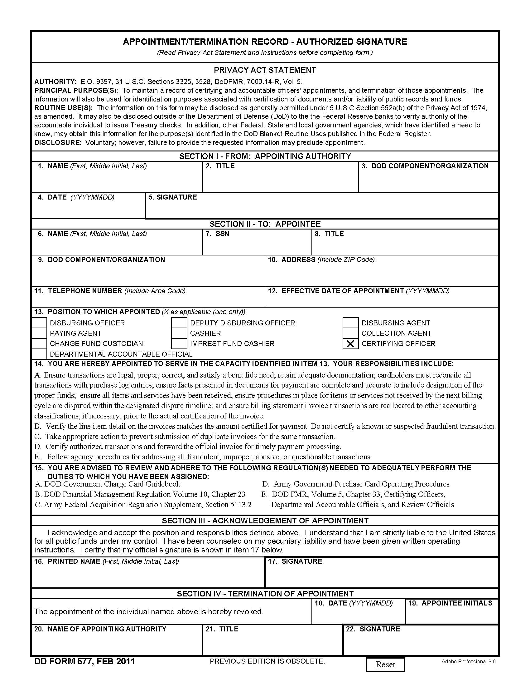

Appendix E: DD Form 577 for Appointing a Certifying Officer Table Of Contents
The DD Form 577 and instructions for completing the form can be found on the official website for Department of Defense forms at:
http://www.dtic.mil/whs/directives/infomgt/forms/eforms/dd0577.pdf
NOTE: Use the language in Block 14 and 15 in all DD Form 577s
